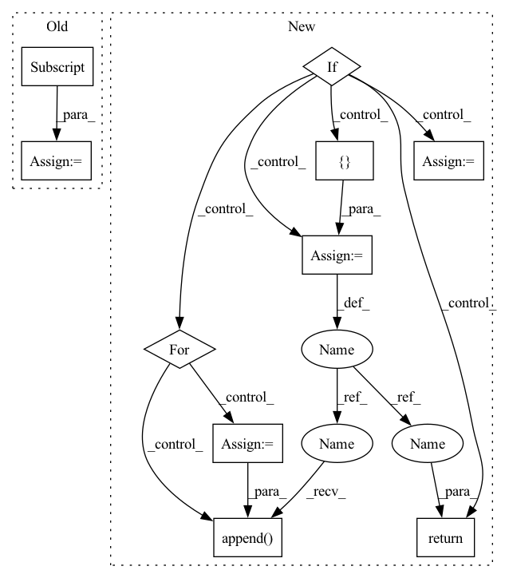

Pattern ID :28330

Before Change
logits = model(features)[0]
entail_contradiction_logits = logits[:, [0, 2]]
probs = entail_contradiction_logits.softmax(dim=1)
prob_label_is_true = probs[:, 1]
results[label] = prob_label_is_true.item()
return results
After Change
else:
tokenizer = AutoTokenizer.from_pretrained(tokenizer_name)
if isinstance(input_text, list):
// Must have a consistent amount of examples
assert(len(input_text) == len(labels))
// TODO: implement proper batching
results_list = []
for text, labels in zip(input_text, labels):
results = {}
for label in labels:
results[label] = calculate_probability(text, label)
results_list.append(results)
return results_list
else:
results = {}
for label in labels:
results[label] = calculate_probability(input_text, label)
return results
In pattern: SUPERPATTERN
Frequency: 3
Non-data size: 10
Instances
Fragment ID: 83659309
Project Name: backprop-ai/backprop
Commit Name: 7f0b95ef8169196944a99724b719f73413b4f159
Time: 2020-12-28
Author: ojasaarkristo@gmail.com
File Name: kiri/models/classification.py
M Class Name: AnonimousClass
N Class Name: AnonimousClass
M Method Name: zero_shot(5)
N Method Name: zero_shot(5)
M Parent Class:
N Parent Class:
M File Name: kiri/models/classification.py
N File Name: kiri/models/classification.py
M Start Line: 38
M End Line: 49
N Start Line: 49
N End Line: 69
'>
Before Change
self.rdm_counter = -1
def get_one_sample(self, rxn_smi: str) -> List[str]:
prod_smi = rxn_smi.split(">>")[-1]
rcts_smi = rxn_smi.split(">>")[0]
neg_rxn_smis = []
for i in range(self.num_neg):
After Change
return neg_rxn_smis
elif self.return_type == "fp":
rcts_fp, prod_fp = rcts_prod_fps_from_rxn_smi(
rxn_smi, self.fp_type, self.smi_to_fp_dict, self.mol_fps
)
neg_rxn_fps = []
for i in range(self.num_neg):
rdm_prod_idx = self.get_idx()
rdm_prod_fp = self.mol_fps[rdm_prod_idx]
neg_rxn_fp = make_rxn_fp(rcts_fp, rdm_prod_fp, self.rxn_type)
neg_rxn_fps.append(neg_rxn_fp)
return neg_rxn_fps
else:
raise ValueError(f"return_type {self.return_type} not supported for Bit Augmentor!")
'>
Fragment ID: 83659326
Project Name: coleygroup/rxn-ebm
Commit Name: 98a06e3339135985ba0e940c6a448faf78cf95cd
Time: 2020-12-14
Author: siriuself1103@gmail.com
File Name: rxnebm/data/augmentors.py
M Class Name: Random
N Class Name: Random
M Method Name: get_one_sample(2)
N Method Name: get_one_sample(2)
M Parent Class: Augmentor
N Parent Class: Augmentor
M File Name: rxnebm/data/augmentors.py
N File Name: rxnebm/data/augmentors.py
M Start Line: 343
M End Line: 353
N Start Line: 357
N End Line: 384
'>
Before Change
logits = model(features)[0]
entail_contradiction_logits = logits[:, [0, 2]]
probs = entail_contradiction_logits.softmax(dim=1)
prob_label_is_true = probs[:, 1]
results[label] = prob_label_is_true.item()
return results
After Change
else:
tokenizer = AutoTokenizer.from_pretrained(tokenizer_name)
if isinstance(input_text, list):
// Must have a consistent amount of examples
assert(len(input_text) == len(labels))
// TODO: implement proper batching
results_list = []
for text, labels in zip(input_text, labels):
results = {}
for label in labels:
results[label] = calculate_probability(text, label)
results_list.append(results)
return results_list
else:
results = {}
for label in labels:
results[label] = calculate_probability(input_text, label)
return results
'>
Fragment ID: 83659310
Project Name: kiri-ai/kiri
Commit Name: 7f0b95ef8169196944a99724b719f73413b4f159
Time: 2020-12-28
Author: ojasaarkristo@gmail.com
File Name: kiri/models/classification.py
M Class Name: AnonimousClass
N Class Name: AnonimousClass
M Method Name: zero_shot(5)
N Method Name: zero_shot(5)
M Parent Class:
N Parent Class:
M File Name: kiri/models/classification.py
N File Name: kiri/models/classification.py
M Start Line: 38
M End Line: 49
N Start Line: 49
N End Line: 69